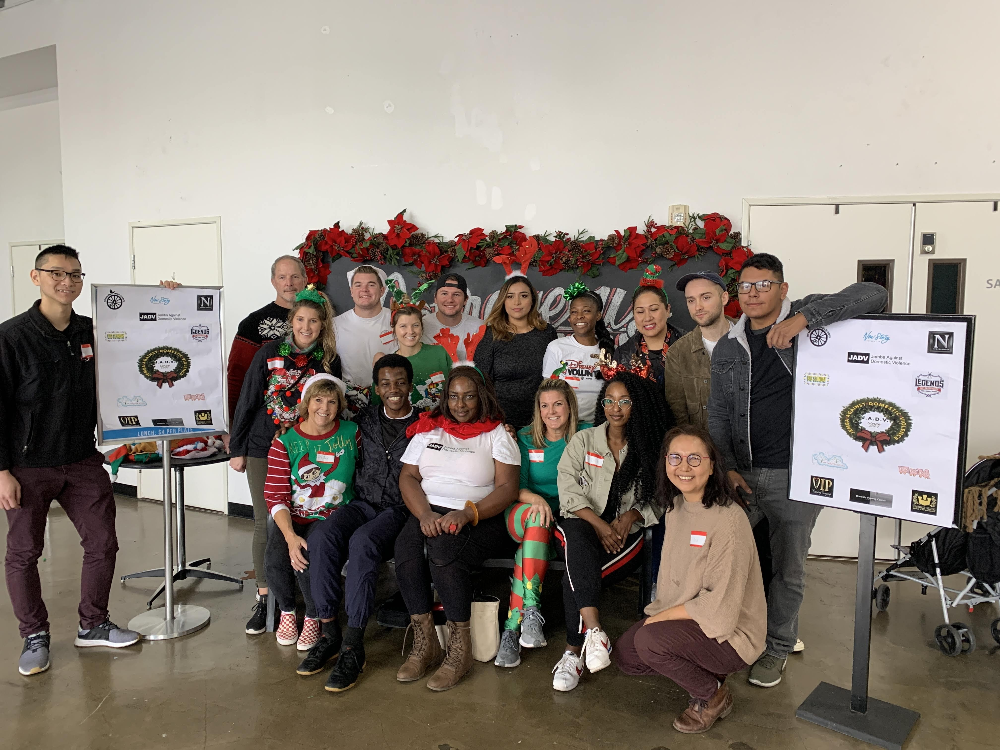
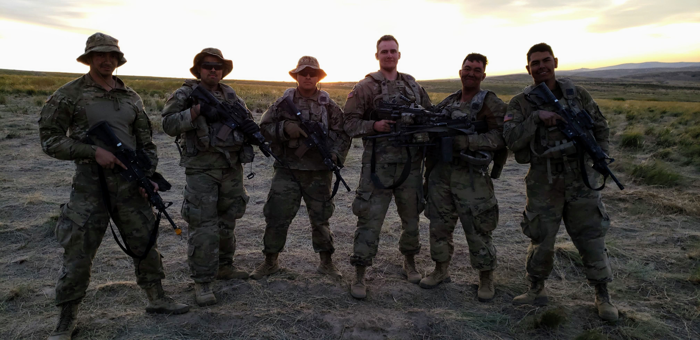
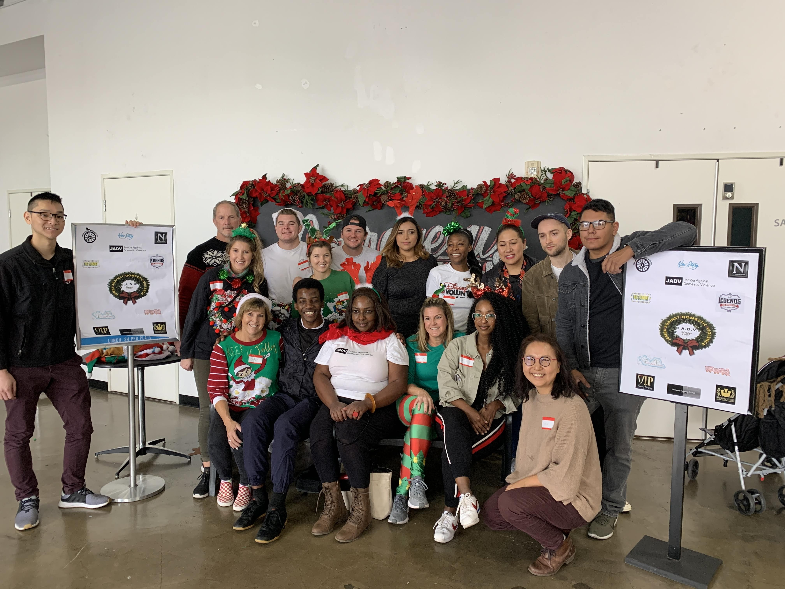
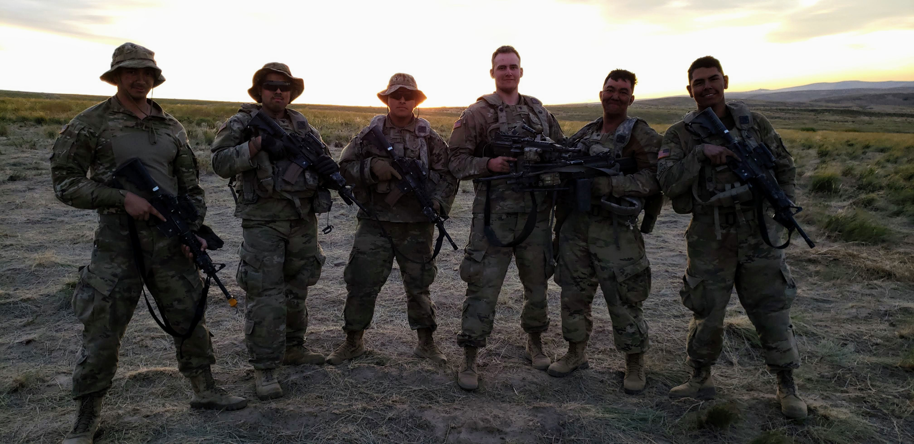
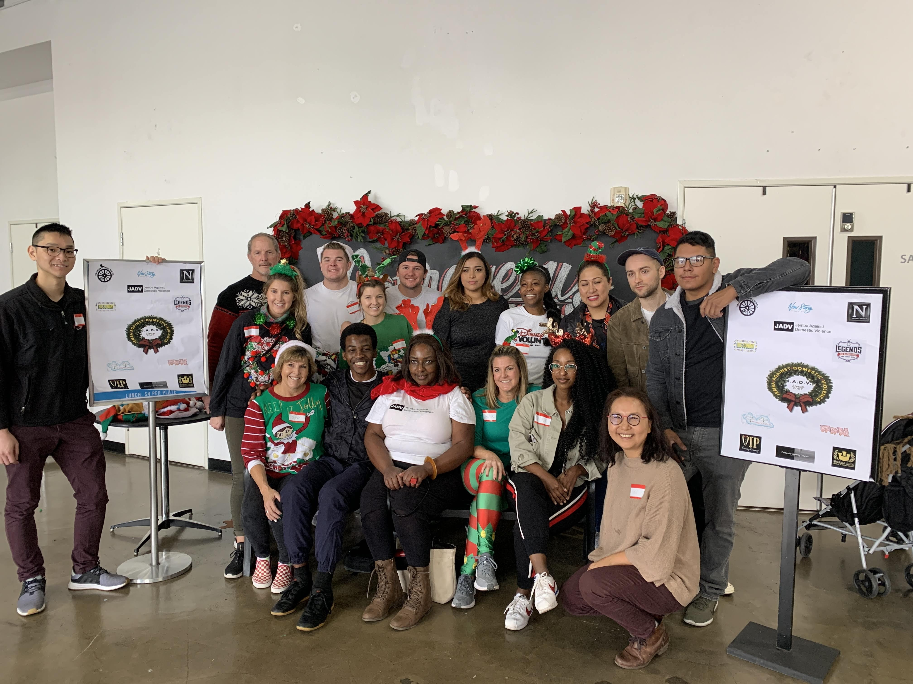
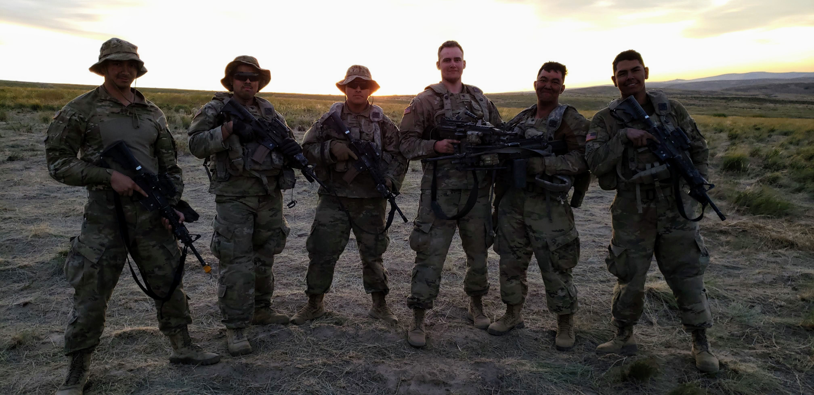

Martin Sanchez
The road to becoming a teacher was a road that wasn't very shared nor was it very common. I first attended UCR as undeclared as I didn't know what I wanted to major or focuse my time on.
When I first enlisted in the military, it was to secure a future for myself and for the woman I was with at the time. Times have changed and I have shifted my focus to finishing my career in the military. I enlisted under a contract that would entail my committment to
the military for 6 years. I enlisted when I was in my freshman year of college, it was at a time where I was on the cusp of being academically dismissed due to my low GPA from my past two quarters,. Over time, I realized that if I was able to surpass great odds and
complete various grueling tasks in the military that taxed both my body and mind, then there's nothing I can't do.
During the Summer of 2019, I was trying to find work at any place I could find due to the lack of work on Campus for Student Services. I was applying at every spot that I could think of, revising my resume, and making sure I went to Job fairs when I had the time.
Yet, it was still difficult to find work even with my past military experience and years of work. So when I finally found a job as an AVID tutor, it was perhaps the greatest feeling I had felt in a while and it jump-started my pursuit in becoming a teacher. Now that
I have almost two years of experience with AVID, and have been helping many of my students with understanding their class materials. I even reached out in providing my services to many families who have kid. With the pandemic,a lot of tutoring has to be done via Distance
Learning. While challenging, I have been slowly adjusted to such challenging circumastances by implementing various methods of learning strategies that have benefited my students.
Experience
Tutor
• Encourage students to participate and ask questions during tutorials
• I assist with any questions that may relate to the subject when needed
• I grade my students work and grade accordingly based on their work
• I help plan out some learning strategies that my some of my students could use if they are struggling with their class
• Accomodate to Distance Learning and to provide strategies that best help students learn
- I help with any computer issues that students may hold when attempting DL tutorial
- Whenever my student group have trouble with presenting, I share my screen of their work so they can present to the group
Student Worker
• Responsible for making food for customers and that it was up to their standard
• My duties for Custodial were to make sure that all the restrooms, trash, and floors were clean of any trash.
• My duties as dishwasher was to clean all the dishes, utensils, and throw away leftover food.
Infantryman
• Training to be proficient in heavy amounts of weaponry
• Operated many vehicles to be used in case of deployment
• Trained to protect the U.S against any threats that might come by utilizing battle strategies
Education
Calfire
University of California Riverside
University of California Riverside
Portfolio

 




